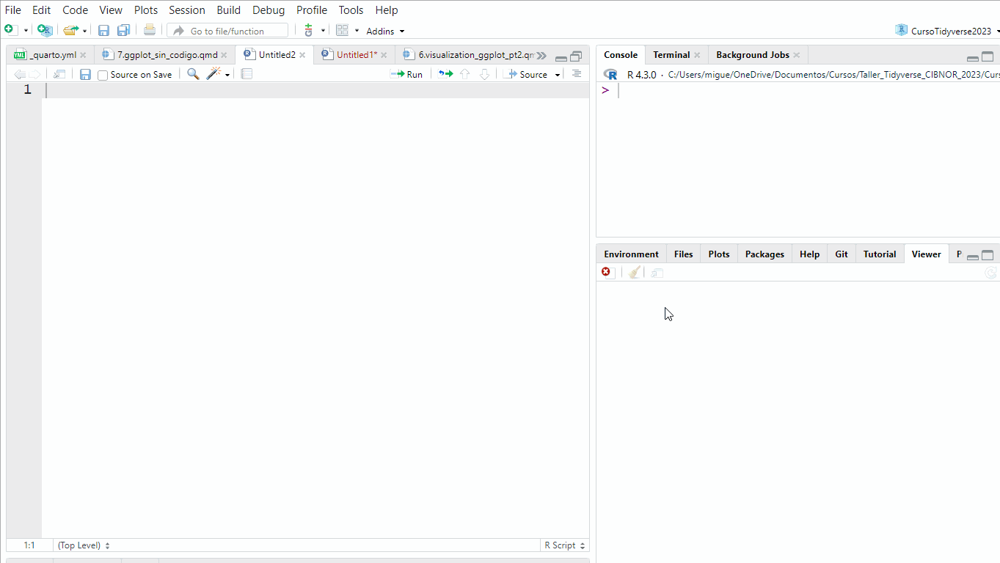
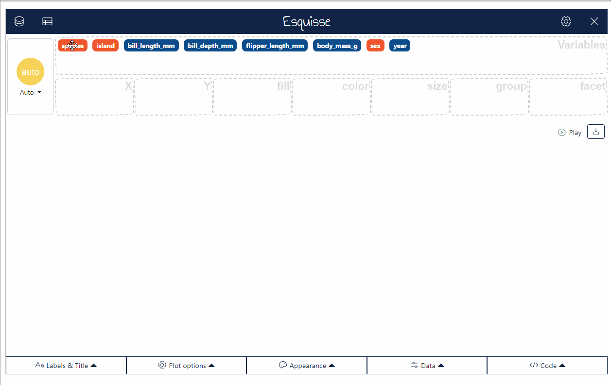
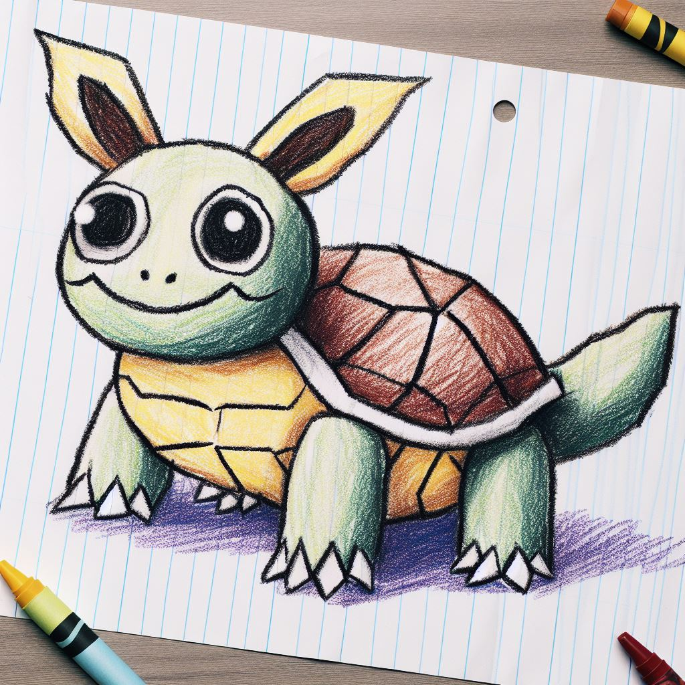
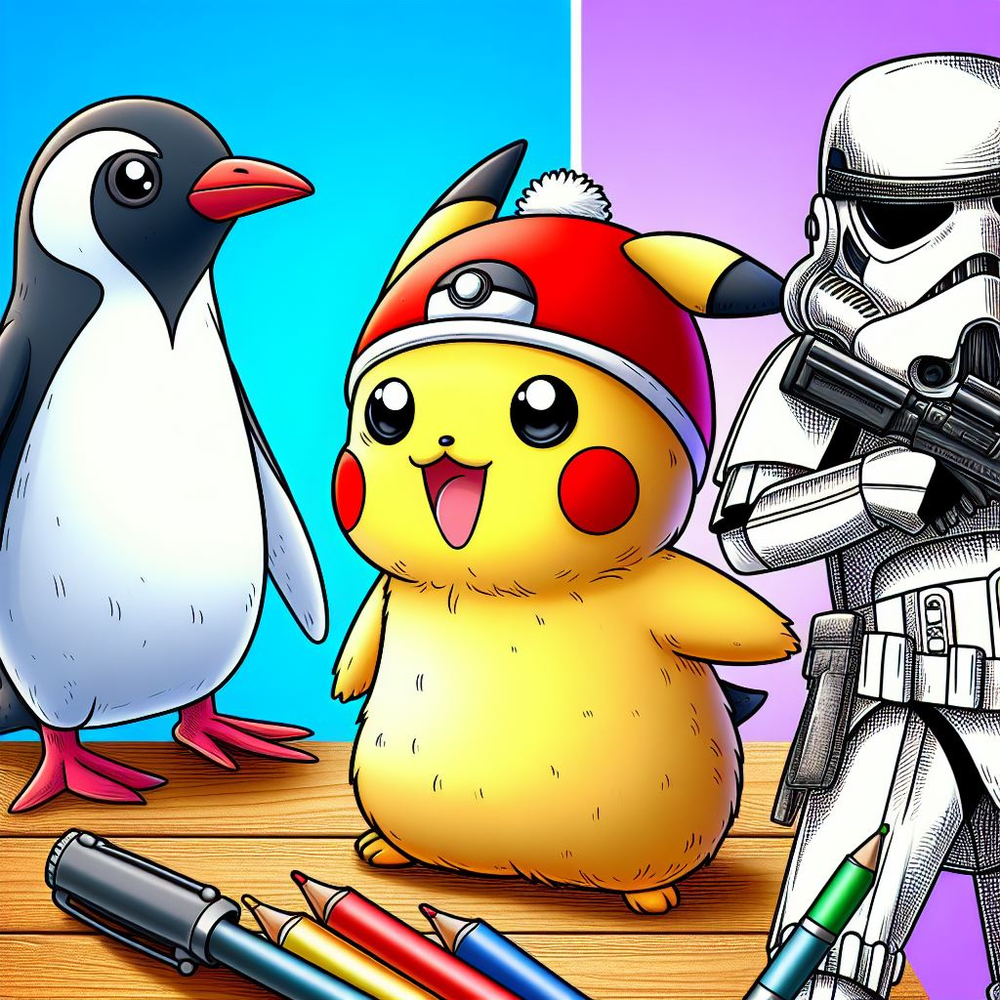

install.packages("esquisse")ggplot2 sin codigo
Como hemos visto hasta este punto, ggplot2 es una poderosa herramienta para realizar gráficos de alta calidad y un alto grado de personalización. Esto último conlleva al problema de que puede resultar complicado escribir la grpamatica necesario para gráficar lo que deseamos, o incluso que lleve tiempo realizar un gráfico relativametne sencillo.
Afortunadamente, existen algunas alternativas dentro de R que nos ´permiten generar gráficos con ggplot2 pero usando una interfaz gráfica.
Esquisse
Este addin the permite explorar de forma interactiva tus datos con ggplot. Permite crear gráficos de barras, histogramas, boxplots, etc. y exportar el gráfico u obtener el código.
Instalación.
El addin de esquisse se instala como cualquier otro paquete usando la función install.package()
esquisse addin
Una vez instalado, hay dos formas para correr esquisse:
- Desde la línea de comando usando la función
esquisser()
library(esquisse)
esquisser()
library(ggplot2)- Utilizando las opciones de addins:

Note
Si no tienes nada en tu ambiente, esquisser() abrirá un panel donde puedes seleccionar la base de datos a partir de un archivo, de un enlace, una hoja de google sheet o incluso copiar y pegar desde otro archivo.
Si ya tienes datos en tu ambiente, puedes abrirlos directamente con esquisser de la siguiente forma:
esquisser(penguins)
Tip
Si tienes problemas con la ventana de esquisser en el panel, puedes abrirla en una ventana del explorador usando el parámetro viewer = "browser"
esquisser(viewer = "browser")Una vez seleccionados los datos, podemos proceder a arrastrar cada uno de las variables a los distintos aes. Dependiendo del tipo de datos, esquisser nos sugerirá una geometría (geom) adecuada para los datos o podemos seleccionar manualmente el tipo de gráfico.


ggplotgui
Otra herramienta para generar ggplot utilizando una interfáz de usuario gráfica es ggplogui.
En general, este paquete genera una interfaz gráfica en shiny para cargar datos, generar visualizaciones y exportar la visualización o el código. Hay dos formas en las que se puede usar ggplotgui: 1) En línea, donde puedes utilizar este programa sin necesidad de tener instalado R. 2) Dentro del ambiente de R usando la función ggplot_shiny()
Instalación de ggplotgui desde el ambiente de R
Note
Es necesario tener instalada la libreria “devtools”
install.packages("devtools")
devtools::install_github("gertstulp/ggplotgui")
library("ggplotgui")Una vez instalado, corremos la función:
ggplot_shiny()
ggplot_shiny(pokemon)En línea, se puede usar la herramienta en el siguiente enlace:
ggThemeAssist
ggThemeAssist es otro addin de RStudio que proporciona una interfaz gráfica para editar los temas (themes) de ggplot2.
Instalación
Este paquete se encuentra disponible en su versión mas estable en CRAN:
install.packages("ggThemeAssist")Una vez instalado, aparecera dentro de la lista de addins de RStudio
Uso
Una vez instalado, para usarlo es necesario seleccionar un objeto ggplot que ya se haya generado y posteriormente abrir el addin desde el panel de RStudio.

Conclusiones finales
Estas herramientas facilitan la exploración de datos y la edición de objetos ggplot, pero todas ellas tienen limitaciones para la edición mas fina o el uso de ciertos geoms no tan comunes.


theme()